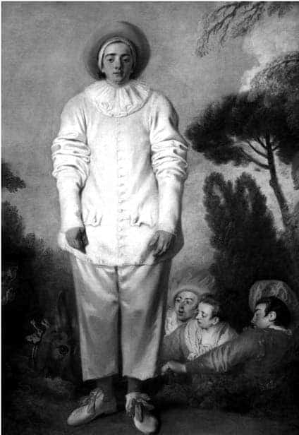
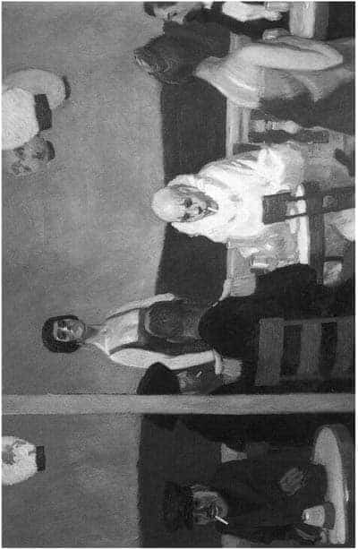

7.2.
Antikçağlardan beri süregelen Dionyssos ile Apollon çelişkisi ve çatışmasını anlatan oyunlarda kullanılan maskeler Rönesans dönemi karnavallarında yeniden güncelleşmiştir.
Freud, bu konuya değinen bir yazısında şöyle der:
Ben’in omuzlarına zorla yüklenen bütün vazgeçmeler ve kısıtlamalar karşısında yasakların bir dönemsellik (periyodite) gözetilerek çiğnenişi bayram ve şenliklerin de kanıtladığı gibi kuraldır; sonuçta bayram ve şenlikler, başlangıçta yasaların engellediği cümbüşlerdir ve neşeli bir karakter taşımaları da her seferinde yeniden özgürlüklerine kavuşuyor olmalarından kaynaklanır. Romalıların –toprak tanrısı Satürn Gezegeni adına yapılan şenlikler– Saturnalien’leri ile bugün bizim kutladığımız karnavallar normalde alabildiğine kutsal yasaların çiğnenmesi ve her türlü taşkınlığa başvurmalarıyla sonlanan eski şölenlerin eşidir.15
Medici Ailesi, 26 Şubat 1541 tarihinde, Floransa’da, karnaval eğlencesi kapsamında büyük bir maskeli balo düzenlemiş. Bu ünlü baloya gelenler, gerçek kimlikleri ile dış görünüşleri (Dionizos/Apollon) arasındaki farklılığı vurgulu biçimlerde göstermek için, yüzlerinin bir kısmını kapatan küçük maskeler takmışlardır. İzleyen yıllarda, Kuzey İtalya’nın, Padua kentinde bazı tiyatro gruplarının oyuncuları da yüzlerine maske takarak sahneye çıkmaya başlamışlardır.16
Piyero tipi (Pierrot), olasılıkla böyle bir gelişmenin sonucunda, 1545 yılında Padua komedi tiyatrolarında ortaya çıkmıştır. 1570 yıllarından sonra, İtalyan komedi tiyatro grubu, Rönesans dönemi toplumsal çarpıklıklarını, moral sapmalarını, ikiyüzlülükleri anlatabilmek için ağızlarını ve burunlarını açık bırakan, buna karşın yüzlerinin üst yarısını kapatan deri maskeler kullanarak Piyero tipini geliştirmiştir.
Artan toplumsal karmaşalar içinde, bazı sanatkârlar, kendilerinin kültürel, moral, ekonomik dışlanmışlıklarını anlatabilmek, çaresizliklerini vurgulayabilmek için, beyaz giysiler içinde, gene yüzlerinin üst yarısını kapayan küçük maskelerle, kent sokaklarında gitar çalarak konumlarını anlatan hüzünlü şarkılar söylemeye başlamışlardır. Sonraki yıllarda, Gino Severini, 1924 yılında bir seri Pierrot çalışmasıyla, bu müzisyen tiplerini resimlemiştir.
Piyero tipinin, Medici Ailesinden, Katharina dé Medici (1519-1589) üzerinden ilk kez Lyon dolaylarına, sonra da Maria dé Medici (1573-1642) üzerinden Paris’e davet edilen, İtalyan komedi tiyatro grupları tarafından Fransa’ya getirildiği sanılmaktadır. İtalyan tiyatro gruplarının Paris’te oynamaya başlamalarından sonra Piyero tipi dünya ölçeğinde ünlenmiştir.17
Bu arada Antoine Wattheau (1684-1721), piyero tipinin en güzel ve anlamlı anlatımını yaparak bu tipi ölümsüzleştirmiştir. Piyero, burada, toplumsallaşamayan, toplumun kenarından toplumu seyreden, istese de –artık– bu kalabalığın içine giremeyen, görevi –rolü– bitmiş, kenara itilmiş/atılmış bir sanatkâr, aydın, insan durumundadır... Hüzünlü, güvensiz, ikircimli, güçsüz, tükenmiş ama her şeye karşın gene de ayakta durmaya çalışan, “garip bir insan” tipidir...18
Piyero, dünyaya fırlatılıp atılmışlığın saçmalığını gören, toplumsallaşamayışın, bu traji-komik durumun bilincinde olan, ancak yüzüne taktığı maske ile insanlar arasına katılabilen bir insandır.
Antoine Wattheau, bu tipi ölümsüzleştirmiştir. Wattheau’un Piyero’su, beyaz saten giysiler içinde, güçsüz, tükenmek üzere olan bir insandır. Başkalarından çok farklı bir görünüm ve konum içindedir. Önünde sonsuz sayıda düğmeleri olan bu giysinin kolları çok uzun, yakası boynunu çok sıkmaktadır. Piyero zarif, kurdeleli, ince saten pabuçlarıyla, toplumsal kavgaların, kalabalıkların arasına sıkışmış, başkalarından çok farklı bir insan tipidir. Boyanmış yüzü mimiksiz, donuk bakışları yere eğilmiş/dikilmiştir.19
Tek tümcede: Varoluşun saçmalığını sergilemektedir.
Nietzsche’nin Antik Grek trajedisi üzerine yazdıklarını anımsarsak, kültürün anahtarı, Dionizos değişimine, sevincine, coşkusuna değin uzanır. İnsan her bir şeyden önce bu varoluşunun coşkusunu yaşamak istemektedir. Ancak bu yaşam, aklı simgeleyen Apollon tarafından dengelenmek istenmektedir. İnsanın trajedisi Dionizos/Apollon çatışmasında başlamakta ve sürmektedir.20 Piyero, bu çatışmanın ve birliğin sanatkârlar katındaki ifadesini simgelemiştir. Piyero, içindeki tüm çocuksu duyguları, heyecanları, coşkuları yüzündeki Apollon maskesiyle bastırmaya çalışmakta. Ancak başkalarından başka oluşu, gene de açık seçik görülebilmektedir.
Fransız Devriminin ve Napolyon savaşlarının etkisinde kendisini yenik düşmüş gibi duyumsayan 19. yüzyılın Fransız aydınları kendilerini bu onurlu, melankolik, genç bohem Piyero tipinde canlandırmışlardır. Bu bağlamda, Honoré de Balzac, Gerard de Nerval, George Sand, Charles Baudelaire ve özellikle de Honoré Daumier, öncelikle anımsanan sanatkârlardır.

Antoine Wattheau, Pierrot 1718, (184,5 x 149,5 cm.), Yağlıboya,
Louvre Müzesi, Paris.
Bunlar bu yeni Piyero tipinde, mutsuz proletarya, sanatkâr, aylak karışımı insanı canlandırmıştır. Eski İtalyan Komedi Tiyatrosu’nun geleneğini Théatre des Funambules’ta sürdürmek istemişlerdir...
Daumier (1808-1879), burjuva toplumunu yeren, inanılmaz güzellikte yapıtlar üretmiştir. Onun “Don Quijote”ları, bu hüzünlü, melankolik kahramanın belki de en güzel örnekleridir.
Dönemin hemen hemen tüm hüzünlü melankolik sanatkârları, artık insan içine maskesiz çıkılamayan bu trajik-komik koşullarda, modern toplumun giderek karikatürleşen durumunu sergilemeye çalışmışlardır.
Baudelaire –J. Janin’e yazılmış– bir mektubunda şöyle der: “Mutlu bir insansınız siz. Bu denli kolay mutlu olmanızdan dolayı acıyoruz size, Mösyö. Bir insanın kendisini mutlu sanacak kadar alçalması mı gerek!.. Ah! Mutlusunuz Mösyö. Ya! Eğer siz: ‘Erdemliyim ben’ deseydiniz; ben bunu anlardım: Başkalarından daha az acı çekiyorum. Ama hayır, mutlusunuz siz. Demek ki kolayca hoşnut oluyorsunuz! Acıyorum size ve kendi keyifsizliğimi sizin üstün mutluluğunuzdan daha değerli buluyorum. Yeryüzünde gördüğünüz şeylerin size yetip yetmediğini sormaya kadar varacağım. Nasıl olur! Yalnız gösteri değiştirmek için bile olsa, çekip gitmek istemediniz mi hiç! Ölümü sevmeyene acımak için pek ciddi nedenler var elimde.”21
18. yüzyılın son yıllarında ve 19. yüzyılın başlarında bu konuyu işlemeyen ve kendisini Piyero-palyaço olarak görmeyen ve göstermeyen sanatkâr bulmak neredeyse olanaksızdır. Igor Strawinsky (1882-1971), 1911 yılında Petruşka tipiyle aynı konuyu işlemiş. Buradan, Picasso’yu çok yönlü etkilemiş. Arnold Schönberg (1874-1951), 1912 yılında Pierrot Launaire’yi bestelemiş...22
Paul Klee, Max Beckmann, Picasso ve başkaları kendilerini pek çok kez Piyero olarak betimlemişlerdir.
Edward Hopper’in (1882-1967), 1914 yılında yaptığı Mavi Gece adlı yapıtında, toplumsallaşamayan Piyero olağanüstü bir çarpıcılıkta sergilenmiştir. Burada Piyero, başkalarından farklı beyaz giysileri, boğazını sıkan yakalığı, kırmızı boyanmış gözleri, dudaklarıyla arkasını denize dönmüş oturmaktadır. Önünde yarım bardak şarabı, ağzında yakılmamış bir sigara vardır. Mekânsız olarak, balkonda hiçbir iç dinamiği olmayan, rastlantısal bir araya gelmiş gibi görünen küçük topluluğun merkezinde oturmaktadır. Giysilerinden işçi olduğu sanılan genç adam, Piyero’ya arkasını dönmüş. Tam karşısında yüksek rütbeli bir ordu üyesi ile bir entelektüel onunla hiç ilgilenmeden kendi aralarında konuşmaktadırlar. Yapıtın diğer kenarında, varlıklı bir çift kendi dünyalarında yaşamaktadırlar. Ayakta, gösterişli ve abartılı yüz ifadeli bir kadın kendisine bakmaktadır. Gözlerindeki hüzünlü, melankolik bakışlar ile giysileri arasındaki zıtlık, kendi düşlerinde, fantezilerinde yaşayan Piyero’nun dünyadaki varlığını daha da anlamsız, hatta saçmalaştırmaktadır. Piyero ve diğer insanların neden bu dünyada oldukları belli değildir. Fakat kendisini diğerlerinden çok farklı duyumsayan Piyero, son derece gergin bir ruhsal durumla, suskun ve umutsuz, sıkıntı içinde kendisini dizginlemeye, yaşamını sürdürmeye çalışmaktadır.23
Bu konuda en trajik noktayı, Erich Heckel (1883-1970), 1913 tarihinde yaptığı, Pierrot’nun Ölümü çalışmasında koymuştur. Medici Ailesi’nin salonlarında, maskeli balolarda başlayan serüven, büyük kentlerin varoşlarında son bulmuştur.

Edward Hopper, Mavi Gece, 1914, (91,4 x 181,9 cm.) Whitney Sanat Müzesi.